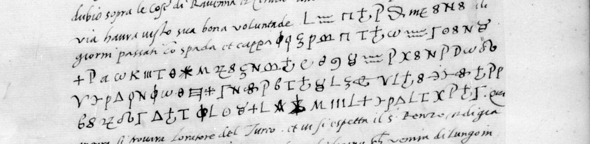

01 The letters
Count Guido Rangone (1485–1539), a condottiere from Modena in French service, spent the winter of 1529–30 in Venice after the defeat at Landriano. He wrote to the Grand Master, Anne de Montmorency, in Italian, mostly in clear: news of the Peace of Bologna, the Duke of Urbino, the Turkish envoy, the Swiss and Grisons going home. Twice he switched to cipher.
- 24 December 1529, Français 3082 f. 42r, no. 19 (Gallica view 65). Five lines of cipher after the passage on Ravenna and Cervia, which Venice was handing back to the Pope. Copy: Clairambault 330 f. 206, headed “Vol. 143 fol. 42”.
- 10 January 1530, Français 3070 f. 81r, no. 40 (DECODE R4249). Seven lines of cipher after “adesso lo dirò più brevemente che io potrò. Mons.r”, broken by the clear words “vida V. Ex. che tratti sono questi”. Autograph signature “S.re Guido Rangone Co.”. Copy: Clairambault 331 f. 15, headed “Vol. 134 fol. 81”.
Neither copy has a decipherment. Four other Rangone letters from Venice in 1529–30 (Français 3012 no. 44, 3013 no. 19, 3034 no. 18, 2980 no. 44) were checked and are in clear. The ciphered letter of Joachin de Vaux from Ferrara, March 1529, in Français 3012 uses a different sign set.

02 The cipher
A homophonic simple substitution without word division. Vowels have two to eight signs each (e: ω, P, ∞ and two stars; a: ɪ, ʃ, Ȥ; o: 8 and ϙ), consonants one to three (n: K, ᏕᏏ, ㅌ; l: ≈, ξ, ✡). One sign is a null: it stands inside the name Fre·goso. No code signs for names were found. This is the ordinary Italian design of the 1520s, with more homophones than the ciphers of Visconti or Bizozola from the same campaigns. The key is in rangone1530/key.json.
Three pairs of look-alike signs turned out to be different signs and had to be separated: a capital Θ (t) against the narrow θ (i), a “∋” with a leading dash (u) against the plain one (i), and two blotted stars.
03 The letter of 24 December 1529

Clear text in roman, the decipherment in bold; [?] marks signs not read.
… ancora che la recuperi per questa altra via, haura visto sua bona voluntade il Fregoso li giorni passati con spada et cappa tolse fare la cosa de [?]en; mai più [v]olse r[? ? ?]a le cose ben disposte in casa, e harà il f[?] da rovi[n]are; e ho una pratica di lei [che] mi dispiacerà. Qui ancora si trovarà l’Orator del Turco …
“… will have seen his good will. Fregoso, these past days, ‘with sword and cloak’, took it on himself to do the business of [?]; never again did he want [?] the things well arranged in the house, and he will have the [?] to ruin [?]; and I have a negotiation concerning her [or: Your Excellency] which will displease me.”
Fregoso had commanded Ravenna and Cervia for Venice since September 1528, the towns the clear sentence before the cipher is about. Con spada et cappa means in person and without ceremony. The word after “la cosa de” has one unread sign. Fregoso’s old enterprise against Genoa would give de Gen[ova], cut short, and de ben fits as well.
04 The letter of 10 January 1530
Io vi scrissi ultimamente Ill.mo S.re uno certo caso acaduto mi et non li dissi più oltra per alhora; adesso lo dirò più brevemente che io potrò. Mons.r ’l fa instantia a [? ?] de venire al servicio loro, [? ?] le mie … malissimo satisfato di lui; ha mandato a dirlo al signore Cesare e farli grande oferte. Vida V. Ex. che tratti sono questi, essendo seguito la [?]icon[p]uorano a[t]tenderui. Hora lassamo andare questi mei particulari …
“My Lord, he urges [me?] to come into their service … is very ill satisfied with him; he has sent to tell it to Signor Cesare and to make him great offers. See, Your Excellency, what treatment this is, it having followed [?] …”
In January 1530 the Venetian Senate appointed Cesare Fregoso military governor of Verona with 2,500 ducats a year (Dizionario Biografico degli Italiani, “Fregoso, Cesare”). He had married Rangone’s sister Costanza that autumn. The cipher is Rangone’s complaint that the Republic was courting his brother-in-law while it treated him badly, the “certo caso” of his previous letter. In October 1530 the French in turn dismissed Rangone over his protests at a cut in his pension.
05 How it was broken
- Both originals and both copies were transcribed sign by sign (
cipher.txt): 264 signs, flat top frequencies, so homophonic. - Simulated annealing of the sign-to-letter map against the
it-cinquecentofive-gram model, with a letter-frequency penalty. Short runs gave pseudo-Italian and no two runs agreed. The clear text of the same letter scores −1.72 per five-gram, the runs −2.3: the search was failing, not the model. - An incremental annealer, 40 restarts of two million moves each. One restart reached −1.97 and read real words and the name Fregoso. Every perturbed restart from that key went back to it.
- A sensitivity table: 35 signs are fixed by the text with margins of 6 to 85 log units; the others occur once or twice.
- Corrections from the words: б = h (ha mandato, e harà, ho una), the tailed sign = f (oferte), D = b (ben disposte), the null, and the three split pairs.
- Word-aware scoring of the remaining signs, singly and in pairs, under a spaced language model. No reading won by more than noise, so they stay open.
06 What remains open
- A1–A2: “a [? ?] de venire” and “[? ?] le mie”, 9 signs. The sign ɤ occurs twice: “me” reads in the first place and gives no Italian in the second; the annealer’s “b” reads in neither.
- A6: “la [?]icon[p]uorano”, 12 signs. One sign occurs only here and the run has no parallel.
- B3: “de [?]en” and “volse r[? ? ?]a”, 9 signs occurring once each; several words fit.
- B4: “il f[?] da rovi[n]are”, 2 signs.
- Readings that assume an encipherer’s slip: ven[i]re (the h sign for i), al [s]ignore (ɸ t for ρ s), Cesare e (θ i for e), rovi[n]are.
These are blocked by length: the two passages are all the known text in this cipher.
07 Sources
- BnF, Français 3070 f. 81 (Gallica btv1b9059934c; DECODE R4249).
- BnF, Français 3082 f. 42 (Gallica btv1b9060318p, view 65).
- BnF, Clairambault 331 f. 15 (view 15) and Clairambault 330 f. 206 (view 210).
- S. Tomokiyo, “Ciphers of Francis I”, cryptiana, sections Clair. 330 and 331.
- “Fregoso, Cesare”, Dizionario Biografico degli Italiani; Guido II Rangoni, Condottieri di ventura.
Transcription, key, solvers and notes: rangone1530/.